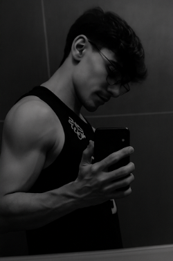

Sobre mim
Sou Davi Veras, um entusiasta da academia, dos esportes e de tudo que envolve saúde, disciplina e evolução pessoal. Desde cedo, me conectei com esse estilo de vida e descobri o quanto o cuidado com o corpo e a mente pode transformar não só o físico, mas também a autoconfiança e a qualidade de vida. Foi essa paixão que me levou a escolher a nutrição esportiva como profissão. Hoje, estou em formação para me tornar nutricionista esportivo, com o objetivo de orientar, motivar e transformar a jornada de outras pessoas que, assim como eu, buscam evoluir e alcançar seus objetivos com saúde, equilíbrio e performance.
Acredito que cada pessoa tem um potencial enorme dentro de si — só precisa das ferramentas certas e do apoio adequado para explorar isso ao máximo. Por isso, junto com meu primo e grande parceiro, estou dando vida à Team Veras, um projeto construído com base em valores como dedicação, confiança, empatia e resultado. Nossa missão é oferecer um acompanhamento próximo, humano e eficiente, que vá além das dietas prontas e realmente ajude nossos futuros clientes a se conhecerem, se superarem e manterem uma vida ativa e saudável a longo prazo. Estou muito animado com essa parceria e determinado a fazer desse projeto um ponto de virada na vida de muitas pessoas.
